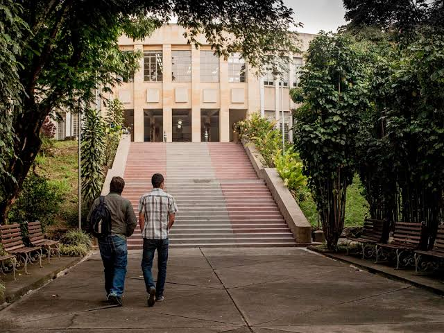
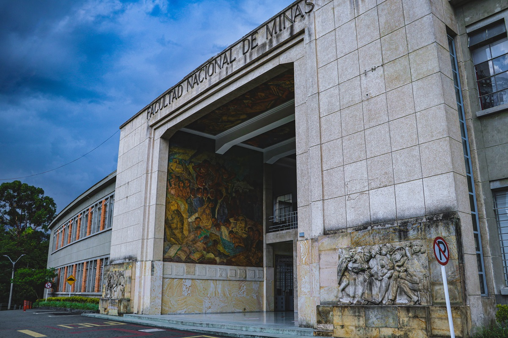

Ofrecemos una amplia gama de posibilidades educativas para potenciar tu desarrollo profesional.

¡No te pierdas las noticias de nuestra Facultad! Mantente informado sobre eventos, convocatorias, actividades académicas y las últimas novedades.
Ver másExplora el fascinante mundo de la ciencia en nuestro museo. ¡Ven y descubre con nosotros!
Ver másGestiona de manera sencilla tus solicitudes académicas, certificados, procesos administrativos y demás trámites estudiantiles.
Ver másConoce toda la información relacionada con grados, requisitos, fechas y procesos académicos para tu camino hacia la graduación.
Ver másPromovemos un campus comprometido con la sostenibilidad, el cuidado del medio ambiente y el desarrollo de prácticas responsables.
Ver másConoce nuestros servicios de laboratorio de alta calidad para investigación, análisis y desarrollo científico.
Ver másLa Facultad de Minas de la Universidad Nacional de Colombia, Sede Medellín, es una de las instituciones académicas más importantes del país en el área de ingeniería y ciencias aplicadas. Desde su fundación en 1886, ha formado generaciones de profesionales comprometidos con el desarrollo científico, tecnológico y social de Colombia.
Hoy, frente a los constantes avances científicos y tecnológicos, la Facultad continúa fortaleciendo sus programas académicos, impulsando la investigación de alto impacto y promoviendo la extensión universitaria como pilares fundamentales de su misión institucional.

Dirección: Cra. 80 #65-223, Robledo, Medellín, Antioquia
Campus: Robledo
Teléfono: +57 (604) 425 5000
Correo: decminas@unal.edu.co
Consulta el directorio de dependencias y contactos de la Facultad de Minas
Protección de Datos Personales